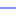

<!doctype html>
<html lang="en">
    <head>
        <meta charset="utf-8">
        <meta http-equiv="X-UA-Compatible" content="IE=edge">
        <meta name="viewport" content="initial-scale=1,user-scalable=no,maximum-scale=1,width=device-width">
        <meta name="mobile-web-app-capable" content="yes">
        <meta name="apple-mobile-web-app-capable" content="yes">
        <link rel="stylesheet" href="css/leaflet.css">
        <link rel="stylesheet" href="css/qgis2web.css"><link rel="stylesheet" href="css/fontawesome-all.min.css">
        <style>
        #map {
            width: "100%";
            height: 559px;
        }
        </style>
        <title></title>
    </head>
    <body>
        <div id="map">
        </div>
        <script src="js/qgis2web_expressions.js"></script>
        <script src="js/leaflet.js"></script>
        <script src="js/leaflet.rotatedMarker.js"></script>
        <script src="js/leaflet.pattern.js"></script>
        <script src="js/leaflet-hash.js"></script>
        <script src="js/Autolinker.min.js"></script>
        <script src="js/rbush.min.js"></script>
        <script src="js/labelgun.min.js"></script>
        <script src="js/labels.js"></script>
        <script src="data/Puntodellegada_1.js"></script>
        <script src="data/Cablesubmarino_2.js"></script>
        <script>
        var map = L.map('map', {
            zoomControl:true, maxZoom:28, minZoom:1
        }).fitBounds([[-22.123950553322928,-85.34569612078477],[3.4038799804535156,-66.73833670119188]]);
        var hash = new L.Hash(map);
        map.attributionControl.setPrefix('<a href="https://www.geogpsperu.com" target="_blank">GEO GPS PERÚ</a> &middot; <a href="https://leafletjs.com" title="A JS library for interactive maps">Leaflet</a> &middot; <a href="https://www.geogpsperu.com">Suyo Pomalía</a>');
        var autolinker = new Autolinker({truncate: {length: 30, location: 'smart'}});
        var bounds_group = new L.featureGroup([]);
        function setBounds() {
        }
        map.createPane('pane_OpenStreetMap_0');
        map.getPane('pane_OpenStreetMap_0').style.zIndex = 400;
        var layer_OpenStreetMap_0 = L.tileLayer('https://tile.openstreetmap.org/{z}/{x}/{y}.png', {
            pane: 'pane_OpenStreetMap_0',
            opacity: 1.0,
            attribution: '',
            minZoom: 1,
            maxZoom: 28,
            minNativeZoom: 0,
            maxNativeZoom: 19
        });
        layer_OpenStreetMap_0;
        map.addLayer(layer_OpenStreetMap_0);
        function pop_Puntodellegada_1(feature, layer) {
            var popupContent = '<table>\
                    <tr>\
                        <th scope="row">SLUG:</th>\
                        <td>' + (feature.properties['slug'] !== null ? autolinker.link(feature.properties['slug'].toLocaleString()) : '') + '</td>\
                    </tr>\
                    <tr>\
                        <th scope="row">NAME:</th>\
                        <td>' + (feature.properties['name'] !== null ? autolinker.link(feature.properties['name'].toLocaleString()) : '') + '</td>\
                    </tr>\
                </table>';
            layer.bindPopup(popupContent, {maxHeight: 400});
        }

        function style_Puntodellegada_1_0() {
            return {
                pane: 'pane_Puntodellegada_1',
                radius: 8.0,
                opacity: 1,
                color: 'rgba(128,17,25,1.0)',
                dashArray: '',
                lineCap: 'butt',
                lineJoin: 'miter',
                weight: 2.0,
                fill: true,
                fillOpacity: 1,
                fillColor: 'rgba(219,30,42,1.0)',
                interactive: true,
            }
        }
        map.createPane('pane_Puntodellegada_1');
        map.getPane('pane_Puntodellegada_1').style.zIndex = 401;
        map.getPane('pane_Puntodellegada_1').style['mix-blend-mode'] = 'normal';
        var layer_Puntodellegada_1 = new L.geoJson(json_Puntodellegada_1, {
            attribution: '',
            interactive: true,
            dataVar: 'json_Puntodellegada_1',
            layerName: 'layer_Puntodellegada_1',
            pane: 'pane_Puntodellegada_1',
            onEachFeature: pop_Puntodellegada_1,
            pointToLayer: function (feature, latlng) {
                var context = {
                    feature: feature,
                    variables: {}
                };
                return L.circleMarker(latlng, style_Puntodellegada_1_0(feature));
            },
        });
        bounds_group.addLayer(layer_Puntodellegada_1);
        map.addLayer(layer_Puntodellegada_1);
        function pop_Cablesubmarino_2(feature, layer) {
            var popupContent = '<table>\
                    <tr>\
                        <th scope="row">SLUG:</th>\
                        <td>' + (feature.properties['slug'] !== null ? autolinker.link(feature.properties['slug'].toLocaleString()) : '') + '</td>\
                    </tr>\
                </table>';
            layer.bindPopup(popupContent, {maxHeight: 400});
        }

        function style_Cablesubmarino_2_0() {
            return {
                pane: 'pane_Cablesubmarino_2',
                opacity: 1,
                color: 'rgba(0,49,246,1.0)',
                dashArray: '',
                lineCap: 'square',
                lineJoin: 'bevel',
                weight: 1.0,
                fillOpacity: 0,
                interactive: true,
            }
        }
        map.createPane('pane_Cablesubmarino_2');
        map.getPane('pane_Cablesubmarino_2').style.zIndex = 402;
        map.getPane('pane_Cablesubmarino_2').style['mix-blend-mode'] = 'normal';
        var layer_Cablesubmarino_2 = new L.geoJson(json_Cablesubmarino_2, {
            attribution: '',
            interactive: true,
            dataVar: 'json_Cablesubmarino_2',
            layerName: 'layer_Cablesubmarino_2',
            pane: 'pane_Cablesubmarino_2',
            onEachFeature: pop_Cablesubmarino_2,
            style: style_Cablesubmarino_2_0,
        });
        bounds_group.addLayer(layer_Cablesubmarino_2);
        map.addLayer(layer_Cablesubmarino_2);
        var baseMaps = {};
        L.control.layers(baseMaps,{' Cable submarino': layer_Cablesubmarino_2,' Punto de llegada': layer_Puntodellegada_1,"OpenStreetMap": layer_OpenStreetMap_0,},{collapsed:false}).addTo(map);
        setBounds();
        </script>
    </body>
</html>
